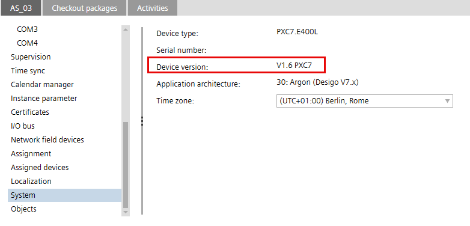
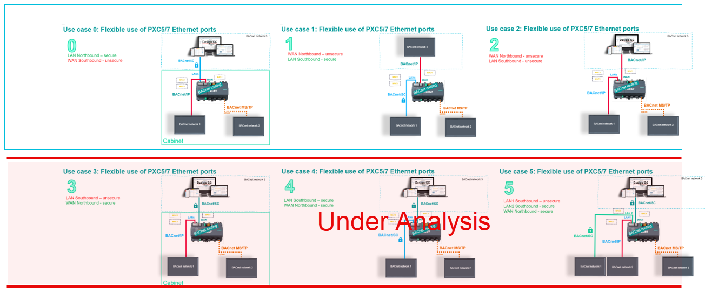
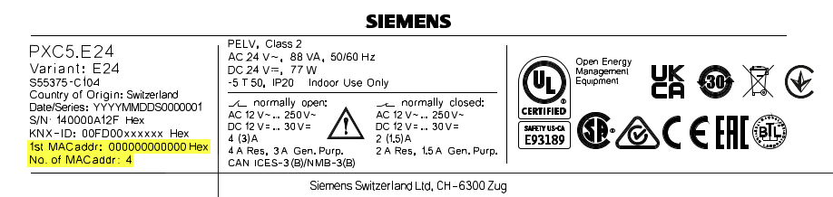

灵活使用以太网端口
从设备版本 1.6 开始，PXC5.E24 和 PXC7 设备通过添加 WAN 端口 (enable/disable) 支持以太网端口的灵活使用。 This enlargers the number of topologies available in the Desigo system. The enable/disable of the WAN port permits operators to separate secure and unsecure networks. To this end, each port receives a own MAC address.

Overview of topologies in the Desigo system

目前1.6仅支持0-2。其他场景已计划在未来版本中使用。

激活 WAN 端口允许运行两个独立的 IP 网络，并将 BACnet 流量与 LANs 和 WAN 分开。这还意味着可以在 Desigo 中运行单独的安全或不安全网络。
NOTICE

WAN port does not support BACnet/SC connections
使用 LAN 端口操作 BACnet/SC. WAN 端口不支持 BACnet/SC 并存在将 LAN 端口暴露为不安全的风险（因为 BACnet/IP 不是安全协议）。
根据您的场景，使用北向和南向术语时，可能意味着南向接口可以对应 WAN 端口（不支持 BACnet/SC 支持），而北向接口可以对应 LAN 端口。
PXC5.E24 technical and mechanical design
PXC7 technical and mechanical design
Migration advantage
您可以将在不安全网络上运行的现有设备（例如 PCX100）连接到 PCX5/7.。新设备依次通过安全网络连接进行通信。
Scenario 0: Two BACnet networks on different Ethernet ports
Separate MAC addresses for each port
MAC 地址在工厂分配，仅适用于新设备。
- 2 LAN ports, 1 WLAN port = 3 MAC addresses for the device types:
- PXC4.E16-2, PXC4.E16S-2
- PXC5.E003
- 2 LAN ports, 1 WAN port, 1 WLAN port = 4 MAC addresses for the device types:
- PXC7.E400x
- PXC5.E24

设备显示一个 MAC 地址和 QR 代码；其他 MAC 地址按 +1（十六进制）计算。
港口 | 具有 3 个端口的设备 | 具有 4 个端口的设备 |
|---|---|---|
LAN 1 | MAC 1 (QR-Code) | MAC 1 (QR-Code) |
LAN 2 | MAC 2 | MAC 2 |
WAN |
| MAC 3 |
WLAN | MAC 3 | MAC 4 |